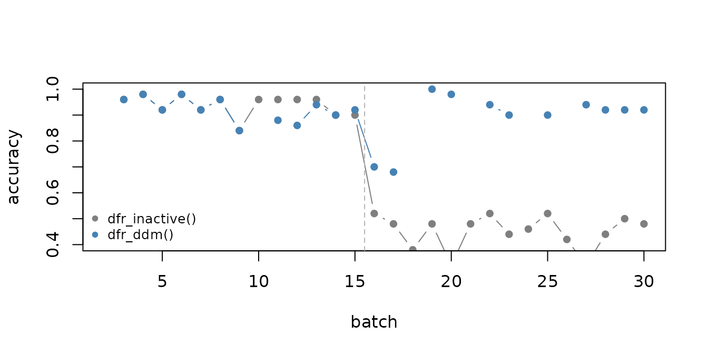

Detecting a drift is only useful if the model reacts to it.
stealthy() wraps a classifier and a drift detector: at
every call to fit() it checks the new batch for drift and,
when one is found, discards the old training data and retrains the model
on the new concept.
A stream with real concept drift
The stream below has two numeric features drawn from the same
distribution during the whole stream. Only the rule that defines the
target changes: up to observation 750 the target is
x1 + x2 > 0, and from then on it is
x1 - x2 > 0. This is real concept drift, because the
inputs look the same but their relationship with the target has
changed.
Training and testing batch by batch
The stream is processed in batches of 50 observations. Each batch is
first used to test the current model and is then given to
fit(), which updates the model with it. The classifier is a
naive Bayes model from daltoolbox.
run_stream <- function(detector) {
model <- stealthy(cla_nb("target", c("FALSE", "TRUE")), detector, warmup_size = 100)
results <- NULL
for (b in 2:max(batch)) {
train <- batch == (b - 1)
test <- batch == b
model <- fit(model, x[train, ], y[train, , drop = FALSE])
accuracy <- NA
if (model$fitted) {
prediction <- predict(model, x[test, ])
accuracy <- mean((prediction[, 2] > 0.5) == (y$target[test] == "TRUE"))
}
results <- rbind(results, data.frame(batch = b, drifted = model$drifted, accuracy = accuracy))
}
results
}dfr_inactive() never reports a drift, so that model
keeps accumulating data from both concepts. dfr_ddm()
monitors the mistakes of the classifier.
without_detector <- run_stream(dfr_inactive())
with_ddm <- run_stream(dfr_ddm())
with_ddm[with_ddm$drifted, ]
#> batch drifted accuracy
#> 9 10 TRUE NA
#> 17 18 TRUE NA
#> 20 21 TRUE NA
#> 23 24 TRUE NA
#> 25 26 TRUE NAAfter the drift is detected, the model needs warmup_size
observations before it is trained again, which is why the accuracy is
missing for one batch.
plot(without_detector$batch, without_detector$accuracy,
type = "b", pch = 16,
ylim = c(0.4, 1), col = "grey50", xlab = "batch", ylab = "accuracy"
)
lines(with_ddm$batch, with_ddm$accuracy, type = "b", pch = 16, col = "steelblue")
abline(v = 750 / 50 + 0.5, lty = 2, col = "grey70")
legend("bottomleft", c("dfr_inactive()", "dfr_ddm()"),
col = c("grey50", "steelblue"),
pch = 16, bty = "n", cex = 0.8
)
Choosing the detector
stealthy() decides what to feed the detector from its
class:
- error-based detectors (such as
dfr_ddm()) receive the mistakes of the model on the new batch, so they react to real concept drift; - distribution-based detectors with a
target_feat(such asdfr_kswin(target_feat = "x1")) receive that feature, and without one they receive the row means of the normalized features, so they react to virtual concept drift; - multivariate detectors (
dfr_aedd()) anddfr_multi_criteria()receive all the normalized features.
In the stream above the inputs never change, so only an error-based detector can notice the drift. When labels arrive late or not at all, a distribution-based detector is the only option, at the cost of missing changes that do not affect the inputs.
Factor, character and logical features are one-hot encoded automatically, and levels that appear only after training are encoded as zeros.